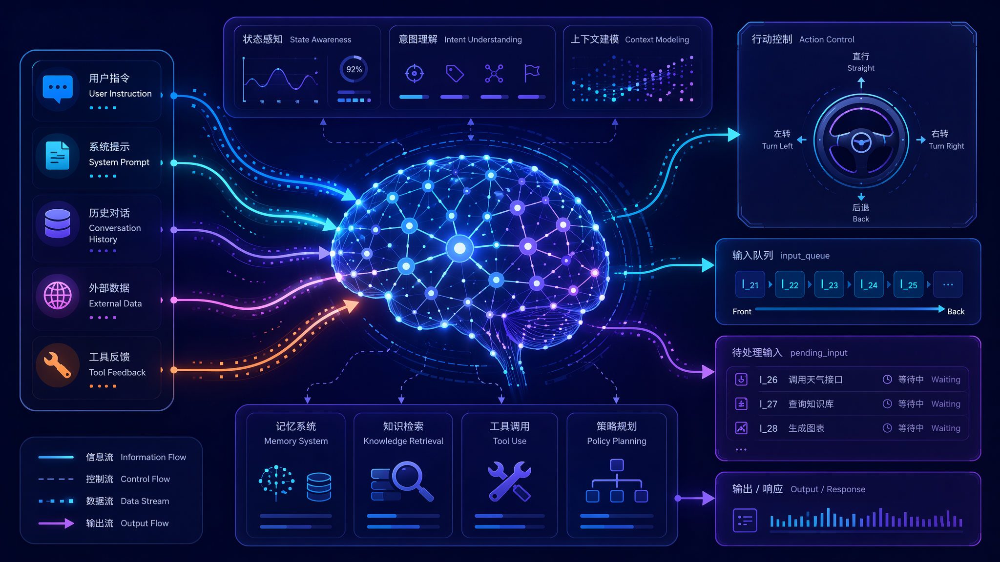

Agent 实时干预机制 深度拆解
从 Codex Steer 到 Hermes Agent，探索下一代 AI Agent 的实时控制范式。 协议级状态机注入 vs 应用层工具结果伪装，两种架构路径的完整对比。

The Problem
Why Agent Needs Steering
The Synchronous Turn Trap
Traditional conversational AI operates on a turn-based model: user sends input → model processes → model responds → user waits for completion before sending next input.
This pattern, inherited from chatbot interfaces, breaks down catastrophically when applied to long-running agent tasks. When an agent runs for minutes (or hours), the user's mental model evolves in real-time, but the agent's execution context is frozen at the moment of turn initiation.
User: "Refactor the auth module to use JWT"
[Agent begins execution...]
User (5 min later):
"STOP! Don't touch OAuth2 flow!"
[Must wait for turn completion
or issue hard interrupt]Three Failure Modes
Direction Drift
Agent misinterprets intent and proceeds down wrong path
Context Lag
New information arrives mid-execution but cannot be incorporated
Scope Creep
Agent extends work beyond intended boundaries
Codex Steer
Protocol-Level Real-time Injection
Protocol Surface
Codex exposes steering through a first-class JSON-RPC protocol method with full type safety and validation:
// codex-rs/app-server-protocol/src/protocol/common.rs:771-775
TurnSteer => "turn/steer" {
params: v2::TurnSteerParams,
inspect_params: true,
serialization: thread_id(params.thread_id),
response: v2::TurnSteerResponse,
}expected_turn_id acts as an optimistic concurrency guard. The client declares which turn it believes is active; if the server disagrees, the steer is rejected with ExpectedTurnMismatch.
Request Processing Flow
Core Session State Machine
// codex-rs/core/src/session/mod.rs:3240-3313
pub async fn steer_input(
&self,
input: Vec<UserInput>,
additional_context: BTreeMap<String, AdditionalContextEntry>,
expected_turn_id: Option<&str>,
client_user_message_id: Option<String>,
) -> Result<String, SteerInputError> {
let mut active = self.active_turn.lock().await;
let Some(active_turn) = active.as_mut() else {
return Err(SteerInputError::NoActiveTurn(input));
};
// Concurrency guard
if let Some(expected_turn_id) = expected_turn_id
&& expected_turn_id != active_turn_id
{
return Err(SteerInputError::ExpectedTurnMismatch {
expected: expected_turn_id.to_string(),
actual: active_turn_id.clone(),
});
}
// Turn type guard
match active_task.kind {
TaskKind::Regular => {}
TaskKind::Review => return Err(SteerInputError::ActiveTurnNotSteerable {
turn_kind: NonSteerableTurnKind::Review,
}),
TaskKind::Compact => return Err(SteerInputError::ActiveTurnNotSteerable {
turn_kind: NonSteerableTurnKind::Compact,
}),
}
// Build and queue pending input
let mut pending_input = additional_context_input
.into_iter()
.map(ResponseItem::from)
.map(TurnInput::ResponseItem)
.collect::<Vec<_>>();
pending_input.push(TurnInput::UserInput {
content: input,
client_id: client_user_message_id,
});
self.input_queue
.extend_pending_input_and_accept_mailbox_delivery(
active_turn.turn_state.as_ref(),
pending_input,
)
.await;
Ok(active_turn_id.clone())
}The Goal Extension System
Codex goes beyond simple message injection by providing semantic steering templates through the Goal extension:
// codex-rs/ext/goal/src/steering.rs
pub(crate) fn continuation_steering_item(goal: &ThreadGoal) -> ResponseItem {
goal_context_input_item(continuation_prompt(goal))
}
// Template: goals/continuation.md
// The objective is: {{objective}}
// Tokens used so far: {{tokens_used}} / {{token_budget}}
// Remaining tokens: {{remaining_tokens}}
// Continue working toward the objective...Hermes Agent Steer
Application-Level Tool Result Append
Design Philosophy
Hermes Agent takes a different approach. Rather than building steering into a protocol-level state machine, it implements steering as an application-layer message manipulation within the Python agent loop.
Simplicity
~50 lines of Python vs. complex Rust state machine
Portability
Works with any tool-loop agent, no protocol required
The Lock-Based Pending Buffer
# run_agent.py:2379-2413
class AIAgent:
def steer(self, text: str) -> bool:
"""Inject a user message into the next tool result
without interrupting."""
if not text or not text.strip():
return False
cleaned = text.strip()
with self._pending_steer_lock:
if self._pending_steer:
self._pending_steer += "\n" + cleaned
else:
self._pending_steer = cleaned
return True
def _drain_pending_steer(self) -> Optional[str]:
"""Return pending steer text and clear the slot."""
with self._pending_steer_lock:
text = self._pending_steer
self._pending_steer = None
return textDelivery Mechanism: Tool Result Masquerading
The critical insight: Hermes masquerades the steer as tool output. Instead of injecting a true user message (which would violate role alternation), it appends the steer text to the last tool result:
# agent/agent_runtime_helpers.py:2371-2432
def apply_pending_steer_to_tool_results(
agent, messages: list, num_tool_msgs: int
) -> None:
steer_text = agent._drain_pending_steer()
if not steer_text:
return
# Find the last tool-role message
target_idx = None
for j in range(len(messages) - 1, -1, -1):
if messages[j].get("role") == "tool":
target_idx = j
break
# Append with marker
marker = format_steer_marker(steer_text)
messages[target_idx]["content"] += marker
# Result: model sees steer as part of tool output
# [USER STEER]: Wait, also check the config
# [/USER STEER]Architecture Comparison
Protocol vs Application Layer
| Dimension | Codex Steer | Hermes Steer |
|---|---|---|
| Abstraction Level | Protocol / State Machine | Application / Message Loop |
| Concurrency Model | Async/await + Mutex | Threading.Lock |
| Input Representation | Structured TurnInput enum |
Raw string buffer |
| Delivery Mechanism | Mailbox queue injection | Tool result masquerading |
| Turn Safety | Expected turn ID validation | None (best-effort) |
| Turn Type Guards | Review/Compact rejected | N/A |
| Error Taxonomy | 4 structured variants | Boolean return |
| Analytics | Full event telemetry | INFO log only |
| Goal Awareness | Continuation/budget templates | None |
Trade-off Analysis
Codex Advantages
- • Type-safe, validated inputs
- • Deep state machine integration
- • Immediate queue injection (low latency)
- • Rich error classification
- • Built-in analytics telemetry
- • Semantic goal templates
Hermes Advantages
- • Simple implementation (~50 lines)
- • No protocol dependencies
- • Works with any LLM API
- • Easy to understand and debug
- • Minimal cognitive overhead
- • Highly portable across frameworks
Implementation Deep Dive
Queue Architecture vs Tool Camouflage
Codex: Input Queue
pub enum TurnInput {
UserInput {
content: Vec<UserInput>,
client_id: Option<String>,
},
ResponseItem(ResponseItem),
}- • Push-based notification model
- • Wakes suspended async tasks
- • Maintains turn boundaries
- • Integrates with session state
Hermes: String Buffer
self._pending_steer: str
self._pending_steer_lock: Lock
# Append: O(1) string concat
# Drain: O(1) swap + None- • Poll-based consumption
- • Blocks on tool batch completion
- • No turn boundary awareness
- • Independent of session state
Concurrency Model Comparison
| Aspect | Codex (Rust) | Hermes (Python) |
|---|---|---|
| Synchronization | tokio::sync::Mutex |
threading.Lock |
| Granularity | Coarse: entire active turn | Fine: single string buffer |
| Blocking | Async await, non-blocking | Thread blocking (GIL-held) |
| Scalability | Many steers per thread | One buffer per agent |
The Paradigm Shift
From Black Box to Glass Box
Batch Model (Pre-Steer)
Streaming Model (Steer)
Trust
Users can course-correct before errors compound
Agency
Users maintain control without micromanaging
Efficiency
Fewer restarts, less wasted computation
turn/start (spawn), turn/steer (signal), turn/interrupt (SIGINT).
Future Directions
Where Agent Steering Goes Next
Protocol Standardization
Codex's turn/steer JSON-RPC method could become a standard. The key primitives—turn/start, turn/steer, turn/interrupt, turn/status—form the basis of an "Agent Control Protocol" (ACP), similar to LSP for IDEs.
// Hypothetical ACP
interface AgentControlProtocol {
turn/start(params: StartParams): Turn;
turn/steer(params: SteerParams): SteerResult;
turn/interrupt(params: InterruptParams): void;
turn/status(params: StatusParams): TurnStatus;
}Semantic Steering
Current implementations inject raw text. Future systems could support structured steer (JSON patches to agent's plan), conditional steer ("If you reach step 3, do X"), and scoped steer ("Apply this only to the auth module").
Autonomous Steering
The ultimate evolution: agents that steer each other. A meta-agent monitors sub-agents and issues steers to optimize parallel execution. This is already hinted at in Codex's multi-agent v2 architecture.